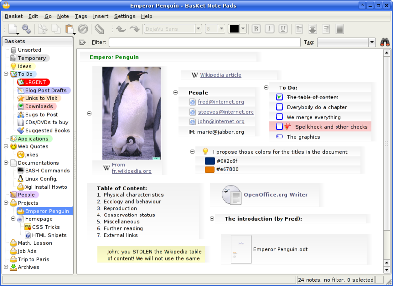
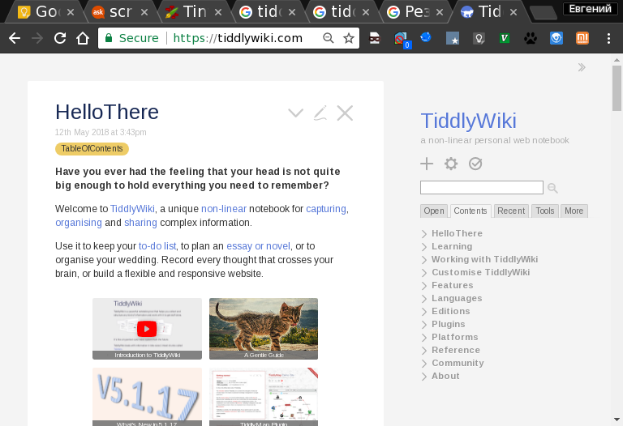
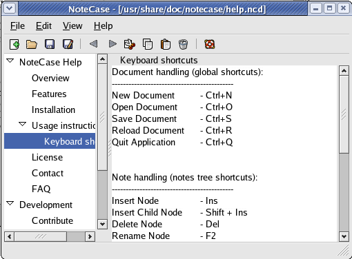
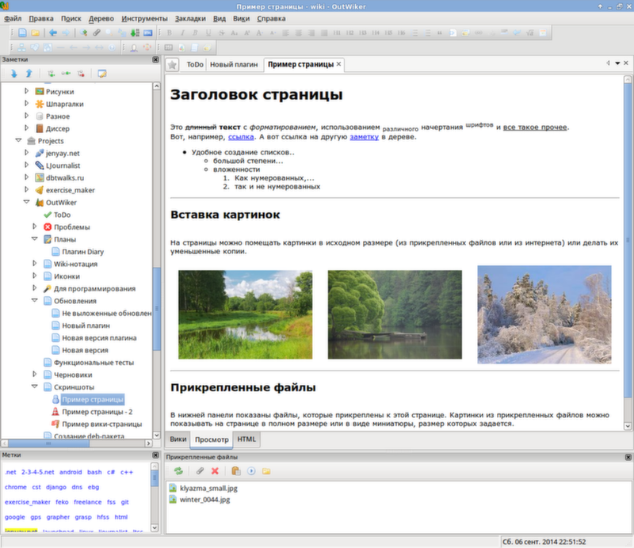
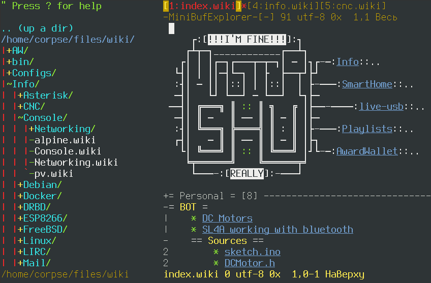
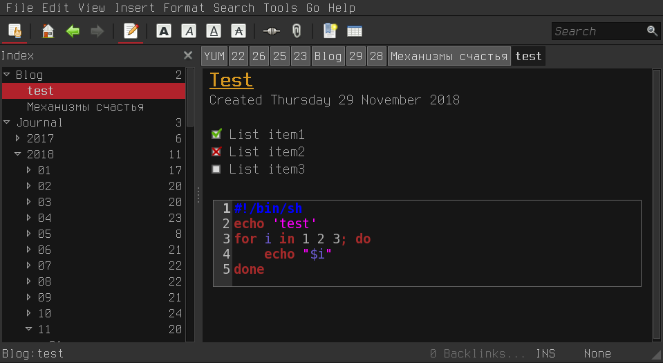
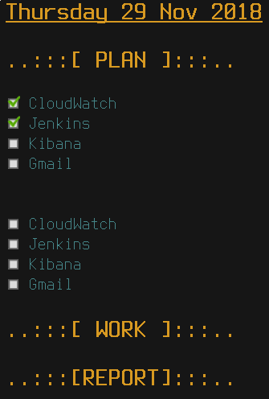
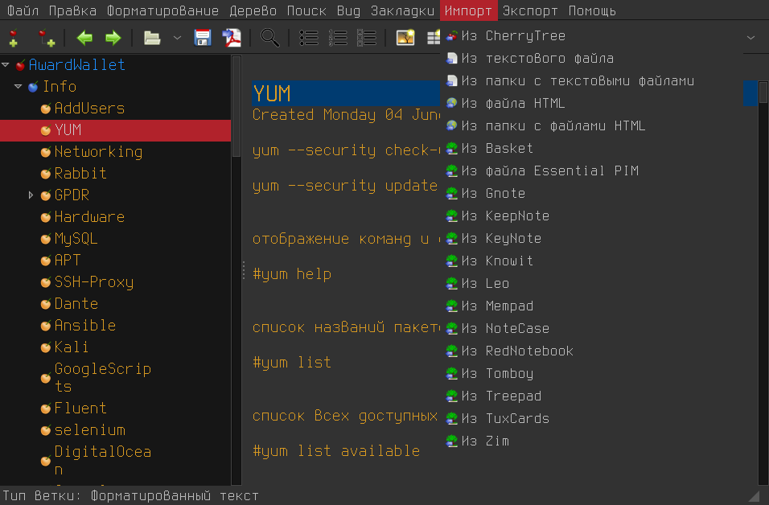

Про эволюцию хранения заметок.

Ко многим вещам, как и ко многому софту, которым я в текущий момент пользуюсь постоянно, меня приводил долгий эволюционно-эмпирический путь. Таким долгим путём прошли ножи, фонари, идут одноплатные компьютеры, домашний сервер, роутеры, клавиатуры, пульты дистанционного управления, множество скриптов и чёрт знает, что ещё. Сегодня я расскажу о том, как я решал проблему хранения заметок, а впоследствии - проблему иерархического хранения заметок.
Во времена школы всё было просто - записная книжка и ручка. Требований к записной книжке немного - удобные габариты, практичная обложка, да и всё пожалуй. Когда дело доходит до хранения заметок в виде данных, сразу появляется море хотелок и требований. И чтобы поиск работал и чтобы ссылки были (в том числе перекрёстные) и теги желательно и вложения и чтобы открывалось это везде и т.п.. Вполне можно проследить эволюцию подобных приложений по мере того, как я менял одно на другое.
Велосипеды
Вначале, лет 18 тому назад я на delphi написал себе записную книжку и долгое время был счастлив. Заметки хранились в txt или rtf файлах, был поиск, иерархия обеспечивалась за счёт вложенной структуры директорий. К сожалению, скриншотов этого уже не осталось.
Basket

Спустя года четыре я начал переходить на Linux. Сначала я жил на KDE3 и в его недрах обнаружил приложение под названием Basket. И оно было прекрасно! Возможность добавлять чекбоксы, куча разных вариантов выделения, всё как-то удобно, органично и информация, которую туда заносишь, получалась прекрасно структурированной и наглядной. Функционал тоже радовал, тем более, в те времена. Аттачи, фолдинг, картинки, ссылки - всё, что угодно! Да вы только посмотрите на скриншоты - прелесть то какая!
Последний релиз на текущий момент 2016-03-11, но каких-то существенных изменений не было уже лет 7.
Плюсы:
приятный наглядный интерфейс (субъективно)
удобный фолдинг отдельных частей заметки
поддержка вставки изображений
Минусы:
похоже, уже не поддерживается
Затем все массово начали переходить на KDE4. У меня тогда сложилось впечателние, что кеды были насквозь сырыми и кушали много ресурсов, поэтому я мигрировал на Gnome 2 и в процессе миграции искал альтернативы
TiddlyWiki

https://tiddlywiki.com/
О существовании этой штуки (не могу даже подобрать правильное слово) мне рассказал друг (Иван, спасибо тебе ещё раз). Пожалуй, она самая необычная в этом сравнительном обзоре. Представляет из себя html файл с большим объёмом JavaScript, который переписывает сам себя. В рамках этой концепции поддерживается расширение функицонала плагинами. Помнится, на андроиде (тогда ещё на андроиде 1.6, а вспоследствии 2.3) открыть этот файл можно было, но запись не поддерживалась. В результате последовательной установки нескольких полезных расширений появлялась возможность создать облако тэгов, включить шифрование отдельных записей, добавить todo, поддержку вставки изображений, календари, меню и многое другое. Одним словом, необходимый функционал можно было формировать самому. Насчёт иерархии не скажу, такого я не находил, но активно пользовался тегами и поиском. А так как на выходе мы получали html файл, то его можно было синхронизировать на любой веб вервер. Более того, пробежавшись по википедии, вспомнил, что есть целый ряд серверных приложений, поддерживающих редактирование статей на стороне сервера.
Существенным развитием возможностей движка является включение возможности взаимодействия с сервером:
- TiddlyWeb (Python) и его социально-ориентированная версия TiddlySpace
- cTiddly (PHP)
- PHPTiddlyWiki
- TiddlyCMS (PHP)
- giewiki (Python, Google App Engine SDK)
Впрочем, если использовать tiddly wiki в качестве веб страницы, то не смотря на все плюсы, возникает и минус - весь контент и большой объём JavaScript будет храниться в одном файле, который постепенно будет расти и браузер пользователя каждый раз будет загружать его по-новой.
Так же были и другие проблемы - сохранение статей работало только под firefox и мне стало любопытно узнать, изменилось ли это с тех пор. Я нашёл и открыл своей файл в TiddlyWiki 10ти летней давности на десктопе в chromium'e и на смартфоне (пришлось прописать полный путь к файлу через file:///path/to/file.html). При попытке сохранить в обоих случаях получил сообщение об ошибке следующего содержания:
Сохранение невозможно. Либо ваш браузер не подерживает эту функцию (используйте по возможности FireFox), либо путь к файлу содержит недопустимые символы
Я решил скачать версию TiddlyWiki лет на 8-10 посвежее и выяснилось, что сейчас существует несколько вариантов:
- Empty Edition - самый простой без дополнительных плагинов
- Blogger Edition - заточен на ведение блога и работу в связке с Node.js
- Full Edition - с неким набором предустановленных плагинов
- Plugin Editions - целый набор файлов с предустановленными плагинами для подсветки синтаксиса, с поддержкой макрдауна и т.п. - правильное на мой взгляд решение, которое позволяет продемонстрировать работу дополнительного функционала и получить сразу версию, где это уже работает
- Résumé Builder Edition - вариант для создания сайта-визитки
И ещё пара менее интересных вариантов.
Я скачал empty и full edition. Надо сказать, что если мой старый файл с tiddly, содержащий множество плагинов и десятки заметок, занимал полтора мегабайта, то тут empty.html уже прибавил в весе до 2.1 мегабайта, а full занимал уже 8.8 мегабайта. Считайте меня ретроградом и минималистом, но мне это показалось неоправданно большим размером (как минимум для выкладывания в качестве веб-страницы).
Помимо основной современной ветки, осталась и ветка classic - то, как выглядела TiddlyWiki до появления пятой ветки и то, что обычно принято называть словом legacy. Она поддерживается параллельно и пустой файл с вики весит всего 404 килобайта (забавно, да).
При попытке сохранения изменённого файла в хроме для обоих версий TiddlyWiki, автоматически выпадает диалог сохранения нового файла рядом с прежним. Это печально - за 10 лет ничего не изменилось. То есть, конечно изменилось и в лучшую сторону, но не так, как этого бы хотелось. Для Linux, MacOS и Windows появилась утилита под названием TiddlyDesktop, сделана она на электроне и конечно, весит под сотню мегабайт в архиве. Это для сохранения файла весом в 2 мегабайта. Других вариантов кроме электрона не нашлось, видимо. Для андроида есть приложение под названием AndTidWiki и в принципе, вполне справляется со своими функциями, особенно на новой версии TW, которая уже написана с учётом поддержки экранов мобильных устройств. Ну и ещё есть расширение для хрома, которое нужно скачивать и ставить руками. Правда после установки расширения при попытке сохранить TW я снова получал диалог сохранения файла. Одним словом, на десктопе либо придётся держать громоздкое приложение, либо использовать firefox, либо после каждого сохранения переименовывать файл руками.
В любом случае, концепция очень интересная и радует возможность использовать TiddlyWiki в качестве блога, сайта-визитки, пакета вики документации, лежащего рядом с проектом в виде одного файла.
Плюсы:
богатый и расширяемый функционал
кроссплатформенность
быстрый поиск, теги, фолдинг
отдельные юзейсы
Минусы:
невозможность сохранения при работе с Chrome/Chromium
нет возможности импорта других форматов
NoteCase

http://notecase.sourceforge.net/index1.html
После экспериментов с TiddlyWiki я надолго переехал на NoteCase. Это древовидный менеджер заметок, нетребовательный к ресурсам. Хранит все записи в одном файле, который можно по желанию зашифровать. Умеет экспорт в html, файловые вложения и прочее минимально необходимое. Кроссплатформенный (но недостаточно, я им пользовался ещё на Nokia N810, а вот под андроид версии уже не было), простой, удобный, но разработка официально прекращена в 2008-м году (хуже от этого он не стал). Ему на смену пришёл NoteCase Pro, который умеет всё то же самое, что и NoteCase, только за деньги. А бесплатная версия пусть и существует, но существенно ограничена по функционалу (отключен поиск, шифрование, возможность вложения файлов). Появилась версия NoteCase Pro под андроид.
Собственно, платную версию NoteCase Pro я не приобретал, поскольку к моменту её выхода я уже давно использовал другие альтернативы, да и почитав обзоры на неё так и не понял, за что я должен платить и в чём существенные функциональные отличия платной NoteCase Pro от старой версии NoteCase. А со старой версии я перешёл в основном по причине отсутствия версии под андроид.
Плюсы:
быстрый, лёгкий, мало зависимостей
поддержка шифрования
поддержка вложений
кроссплатформенность (windows, linux, macos)
Минусы:
не поддерживается уже 10 лет
нет свободной и полнофункицональной версии под андроид
нет поддержки todo списков
OutWiker

https://jenyay.net/Soft/Outwiker
Это довольно таки функциональный комбайн, поддерживающий плагины, умеющий подтягивать изображения в свои директории, отображать формулы в tex и многое другое. Отдельно стОит упомянуть наличие облака тегов - странно, что этот функицонал в приложениях для хранения заметок встречается крайне редко.
По моим воспоминаниям, OutWiker был мягко скажем, достаточно нетороплив и неторопливость ощутимо прогрессировала по мере увеличения числа заметок. С момента, когда я в последний раз запускал это приложение, прошло больше семи лет, так что я решил попробовать снова в надежде, что с того момента что-то изменилось в лучшую сторону (даже если код не был оптимизирован, как минимум увеличилась производительность железа и появились ssd, а outwiker хранит заметки в структуре директорий и файлах).
Для нормальной работы в числе прочего требуется python-wxgtk3.0, python-wxgtk-webview3.0 и ещё ряд библиотек. Установка заивисимостей вытянула полторы сотни мегабайт, что мне не очень понравилось. Да и вообще у меня личная классовая неприязнь к GTK3. Терпеть не могу эти толстые заголовки, в которые попытались утрамбовать весь функционал и которые никогда не отображаются нормально под тем же i3. При том, что далеко не все приложения используют эту функцию. Не понимаю в принципе, чем так плох был GTK2 и что такого революционного и необходимого (контролы в заголовке окна я не считаю необходимым, если из-за этого заголовок становится высотой с отдельную панель инструментов), чтобы перейти на GTK3. В любом случае, девятый дебиан не оставил мне выбора.
Установка под linux явно прописана только для ubuntu-based дистрибутивов:
sudo apt-add-repository ppa:outwiker-team/ppa
sudo apt-get update
sudo apt-get install outwikerДля остальных предлагается получить исходники и разбираться с этим самим, благо это python.
git clone https://github.com/Jenyay/outwiker.git
cd outwiker
git checkout stableВ документации идёт много лишней для меня лично информации о сборке, тестах и прочем, поэтому просто переходим в директорию src и пытаемся запустить:
$ ./runoutwiker.py
/usr/bin/env: «python\r»: Нет такого файла или каталогаШедеврально! Интерпретатор #!/usr/bin/env python в начале файла указан, но переводы строк не в юникс формате, поэтому фактически использовать этот интерпретатор невозможно. Поэтому запустить приложение не изменяя файл получается только следующим образом:
python ./runoutwiker.pyТак как я использую тёмную тему, то первое, что меня встречает - это чёрные заголовки панелей на тёмно-сером фоне. И как бельмо на глазу - белый фон окна тэгов и поля редактирования. О существовании тёмных тем интерфейса разработчик не подумал равно как и о существовании различных вариантов символа перевода строки.
Впрочем, в меню есть возможность применить к любой ветке дерева отдельный стиль. Это набор из CSS, которые можно применить к отображению заметок. Вообще, концепция такова - вы можете писать заметку в wiki формате (или в markdown после установки соответствующего плагина), после чего отображается она в html, который так же можно подправить.
Никакого импорта из других форматов я не нашёл, создавать руками несколько сотен заметок для того, чтобы проверить быстродействие, я не стал. Хотя и при переключении между директорией и заметкой уже проходит около секунды, за которую уже можно успеть понаблюдать за тем, как отрисовывается граница панели редактирования, появляются одна за другой кнопки, заполняются фоном... Словом, сомневаюсь, что на моих полутора тысячах заметок это способно будет работать быстро. Сношу всё.
Плюсы:
широкий функционал
тэги
подтягивание изображений
поддержка md
поддержка стилей отображения для разных веток
поддержка иконок в дереве
кроссплатформенность
Минусы:
сырость
отсутствие импорта из других форматов
очень медленная работа
тяжелые зависимости
поддержки шифрования нет
в тёмной теме интерфейс выглядит плохо
похоже, нет поддержки списков todo (я не нашёл)
VimWiki

https://github.com/vimwiki/vimwiki
Это то, чем я пользуюсь последние лет 6 или может быть даже 8. Фактически - это плагин для VIM, который позволяет писать в вики формате заметки, снабжая их ссылками, фолдингом, подсветкой синтаксиса. Так же есть todo списки и даже рисование таблиц. Достоинства и недостатки очевидны - они вытекают из достоинств и недостатков самого VIM. Если вы любите VIM и пользуетесь VIM, то вам будет комфортно и приятно, но если вы не фанат VIM - лучше даже не пытайтесь. Шифрование отдельных аписей тоже реализуется с помощью VIM (blowfish2). Синхронизация записей между машинами - git. На андроиде доступ к заметкам так же получаю средствами git и vim, да и набор конфигов и плагинов к виму у меня на телефоне и компьютере идентичен.
Плюсы:
малый вес, небольшие зависимости (к тому же VIM я в любом случае постоянно использую в работе)
фолдинг
todo
шифрование
идентичные конфиги для работы на компьютере/телефоне
Минусы:
нет поддержки отображения графики
нет импорта из других форматов
иногда слетает хайлайтинг на длинных документах
ZIM

Параллельно виму для работы я использую ZIM - это gtk2 приложение с плагинами. Почему именно его? На то есть несколько причин. Во-первых, ZIM хранит заметки по тому же принципу, что и vimwiki - в структуре директорий и заметка представляет собой текстовый файл, то есть, рабочую ветку я вижу в том же дереве, что и мои заметки, в отдельной директории и могу редактировать на телефоне с помощью того же вима. Из плюсов - поддерживается вставка изображений, todo и расширение плагинами, правда я в них пока не удосужился покопаться в полной мере, но есть и довольно любопытные. Например, автоматическое вычисление всех простых математических выражений в заметке. Например, вы пишете что-нибудь вроде (2+7)x5 =, затем нажимаете F5 и после выражения автоматически появляется ответ, оно приобретает вид (2+7)x5 =45.
ZIM даже имеет встроенный веб сервер, но результат генерации индексной страницы особой красотой мягко говоря не отличается.
Одним словом, хорошая рабочая лошадка с неплохим расширяемым функицоналом. Шифрование можно прикрутить с помощью как минимум вот этого плагина: https://github.com/jaap-karssenberg/zim-wiki/wiki/Crypt-Selection-Plugin.
 Кстати, очень удобной фичей стала возможность создания ежедневных заметок с номером дня. То есть, у меня есть структура директорий вида [год]->[месяц] и при нажатии сочетания Alt+d в директории текущего месяца создаётся заметка с номером, соответствующим номеру дня и нужной мне структурой, которую я заранее поместил в шаблон. Например, у меня есть несколько сущностей, которые я должен проверить минимум два раза в день, это то, с чего мой рабочий день начинается. Каждая сущность - https ссылка, например, на почту и она же является элементом списка. Нажимая на ссылку, я прохожу по ней, проверяю то, что мне надо и затем в этом списке отмечаю соответствующий чекбокс. А между двумя группами этих проверок в течение дня добавляю остальные приходящие рабочие задачи. В разделе work оставляю временные данные - куски кода из консоли, какие-то команды, записи из логов, а в разделе report опсиываю по каждой задаче действия, которые я произвёл и проблемы, с которыми столкнулся. В следующий раз при возникновении схожих проблем я просто воспользуюсь глобальным поиском, вернусь к нужной записи и это поможет мне восстановить последовательность действий при решении проблемы. Очень удобно.
Плюсы:
хороший расширяемый функционал
мало зависимостей
простой логичный интерфейс
созание заметки с номером дня из шаблона по хоткею
Минусы:
иногда при копировании ломает код, добавляя теги, если не вставлять код в source block, что неудобно
CherryTree

https://www.giuspen.com/cherrytree/ (тут кстати, есть более интересные скриншоты, раскрывающие функционал)
Попробовал совсем недавно, чтобы понять, насколько мне это может заменить ZIM, если окажется лучше. Функционал оказался неплох, я бы даже сказал, он внушает уважение. Есть всё, что нужно и что бы хотелось видеть в подобном приложении. Например, шифрование. Но что меня привело в особый восторг - так это количество форматов импорта из подобных приложений. Там есть и Basket и NoteCase и Zim и многое другое! В том числе импорт из папки с текстовыми файлами (то есть, можно осуществить импорт и из vimwiki и из OutWiker) и с файлами html. Это как то кольцо, что призвано объединить всех и править всеми.
Из 13ти летней давности архива basket мне удалось импортировать свои записи, правда исчезла вся красота, которую обеспечивал именно баскет - различные иконки и тому подобное. NoteCase файл 10ти летней давности CherryTree так же импортировал без проблем, а вот с ZIM это не прошло так гладко - всю ветку импортировать не удалось, импортировался только один файл. Повторять эту процедуру несколько сотен раз не хотелось, поэтому импортировал всё дерево ZIM как директорию с файлами. Но после этого читать заметки стало неудобно - пропала вся структура - заголовки, чекбоксы и тому подобное.
Лично для меня подобное приложение не походит тем, что хранит все заметки в одном файле и я не смогу их нормально открыть на том же android, но вообще, приложение оставило положительные впечатления от использования в отличие от OutWiker, например.
Плюсы:
поддержка импорта из множества других форматов (но не из всех удачно)
быстрая работа
небольшие зависимости
хороший функицонал
шифрование
кроссплатформенность
Минусы:
отсутствие приложения для андроид
Подводим итоги
В зависимости от необходимого функционала из вышеизложенного можно подобрать для себя подходящий инструмент. Чего не хватает лично мне для идеального менеджера заметок? Вероятно, нативного андроид клиента для ZIM/VimWiki и это в свою очередь неплохой повод для того, чтобы его когда-нибудь в будущем написать (подарите мне кто-нибудь на день рождения два мешка свободного времени, пожалуйста).
За рамками данной статьи остались TomBoy, TurtlApp, LeaNote (даже ссылку приводить не буду, у них сертификат истёк), Joplin и многие другие замечательные и не очень приложения. В обзоре я описал только то, чем успел более-менее продолжительное время попользоваться сам.
Что я могу посоветовать? Если вы любите VIM, как его люблю я, то вам скорее всего подойдёт VimWiki. Если у вас нет особых требований и вы хотите хранить дерево в Git репозитории (что автоматически даёт преимущества версионирования и возможность работать с этим деревом любым текстовым редактором на андроид), или вы хотите удобно вести дневник, то обратите внимание на ZIM. В случае, когда вам удобнее хранить заметки в едином файле (например на dropbox или в другом облаке), то очень неплохим выбором будет CherryTree, так же имеет смысл на него переехать, если ранее вы пользовались NoteCase или каким-либо другим менеджером заметок, который вас по какой-то причине перестал устраивать и базу котрого может импортировать CherryTree. Если вы пользуетесь FireFox, то TiddlyWiki как минимум стоит попробовать, потому что это соврешенно не будет похоже на то, как вы хранили свои заметки ранее - опыт интересный и скорее приятный, чем наоборот.